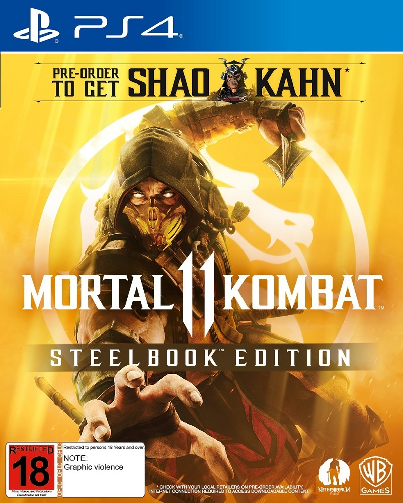

Juegos 2019

MORTAL COMBAT 11
Mortal Kombat 11, desarrollado por NetherRealm Studios y editado por Warner Bros. para PC, PlayStation 4, Xbox One y Switch, es la nueva entrega de la famosa y brutal saga de acción y lucha, ahora con diferentes dimensiones de su oscuro universo a nuestro alcance.
jugabilidad
Según lo mostrado en la presentación comunitaria, el jugador podrá personalizar la apariencia de su combatiente de una forma similar a Injustice 2, mejorando vestimenta y armas con créditos ganados en las peleas. En cuanto a la mecánica de juego, se conservará de Mortal Kombat X las variaciones de pelea, que daran diferentes ataques y habilidades dependiendo de lo escogido, y la interacción con elementos del escenario. Los movimientos X-Ray, icónicos de las últimas dos entregas, pasarán a ser ataques con menos requisitos, renombrándse como Krushing Blows, mientras que habrá un nuevo movimiento especial, el Fatal Blow, que podrá ser realizado si el peleador tiene un bajo nivel de vida, similares a los Ataques de Desesperación de la saga The King of Fighters. La cinemática de los Fatal Blows combina primeros planos al estilo del Klose Kombat de Mortal Kombat vs. DC Universe con escenas estilo X-Ray. La barra de energía se dividirá en poder de ataque, para infligir más daño potenciando los ataques especiales, y poder de defensa, para incorporarse más rápido o realizar los Breakers. Las legendarias Fatalities no estarán ausentes, siendo aún más sangrientas, y con nuevo estilo cinemático.
god of war
God of War (también referido como God of War 4) es un videojuego de acción-aventura desarrollado por SCE Santa Monica Studio y publicado por Sony Interactive Entertainment. Su lanzamiento se produjo el 20 de abril de 2018, en exclusiva para la consola PlayStation 4.1 Se trata de la octava entrega de la serie de God of War, cronológicamente, y la secuela de God of War III. La historia se centra en la mitología nórdica y Kratos regresa como el protagonista principal.
Han pasado años desde que Kratos tomó su venganza contra los Dioses Olímpicos. Habiendo sobrevivido la pelea final contra su padre Zeus, Kratos vive ahora con su joven hijo Atreus en el mundo de los Dioses Nórdicos, una tierra hostil habitada por feroces monstruos y guerreros. Kratos deberá actuar como mentor y protector de su hijo, y tendrá que dominar la ira que tuvo durante muchos años y atar cabos sueltos.
jugabilidad
Las armas principales de Kratos durante todo el videojuego son un hacha llamada "Leviathan" y un escudo. El Leviathan se puede lanzar para golpear o congelar a ciertos rivales, y regresará a la mano del personaje al oprimir un botón. Mientras que el escudo se utiliza tanto para retener y contraatacar golpes como para atacar a los enemigos durante el combate. Esta vez los saltos y dobles saltos de Kratos son suspendidos para dejar lugar a la escalada como forma de exploración de este nuevo mundo. Otro aspecto novedoso en la jugabilidad es la posibilidad de que Atreus pueda subir de nivel en el transcurso del juego, lo cual hará que este aprenda nuevas habilidades que ayudarán a Kratos pero este personaje no será jugable.2 Atreus funcionará como una extensión de las habilidades del protagonista, y atacará a los enemigos con nuestras órdenes y al completar algunos combos. Él puede lanzar una lluvia de flechas cuando no está directamente en combate, capaces de aturdir a los oponentes. Además se incluyen jefes opcionales y Kratos puede aumentar su salud máxima como en anteriores juegos.3 Los dos protagonistas pueden cruzar lagos y ríos mediante el uso de botes. También hay un sistema de mejoras para poder optimizar las armas, armaduras y las habilidades de los personajes.4 Uno de los cambios más notorios en la jugabilidad es el de la cámara, que pasa de ser panorámica a ubicarse cerca de Kratos y libre como cualquier otro sandbox. Cory Barlog se ha referido a este cambio como el que se hiciera anteriormente en la franquicia de Resident Evil.